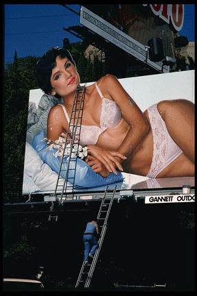

back to Paul's Poetry Page
back to Paul's Poetry Page|
that kind of perfection cannot be rehearsed. it has to be instinctive. the way your shoulders lean into him it is clear that he is not pulling you closer with his arm but rather draping it around the back of your neck like a scarf. your hands could be reaching for his but instead they tighten into fists not resisting but hungrily bracing for the kiss which you allow to tilt your head back at an angle that suggests that you are willingly overpowered. your eyes could be clenched shut but through your long lashes you gaze unfocused beyond your two dimensions into the dark paralysis of my lust. Paul David Mena 15 January, 1997 Cambridge, MA
|
 |
back to Paul's Poetry Page